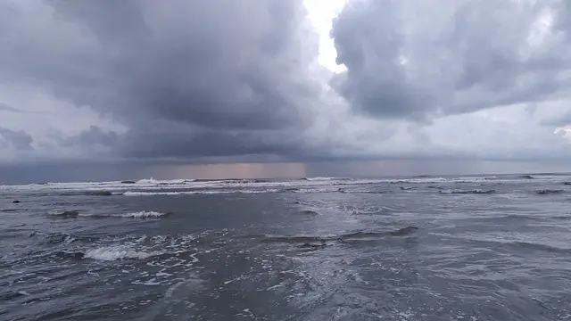
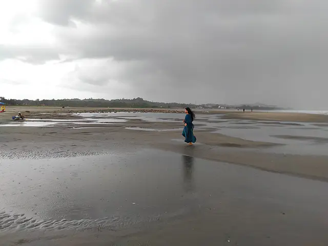

রাকিব কিশোর
 সমুদ্রপাড়ের বর্ষা মন খারাপের নয়, এখানকার বৃষ্টি প্রাণবন্তছবি: লেখক
সমুদ্রপাড়ের বর্ষা মন খারাপের নয়, এখানকার বৃষ্টি প্রাণবন্ত। যেদিকেই তাকাই না কেন, মনে হয়, বৃষ্টির আলাদা প্রাণ আছে। কখনো সে ঢেউয়ের মাথায় চড়ে সৈকতে চলে আসে, কখনো আবার খালের কোলে চড়ে সাগরে ফিরে যায়। কখনো ঝমঝমে এই বর্ষা পুরো মেরিন ড্রাইভে হুটোপুটি করে ছুটে বেড়ায়, আবার কখনো সৈকতের লাল কাঁকড়াদের খেলার সাথি হয়ে ঘুরে বেড়ায় চোখের সামনে থেকে দৃষ্টিসীমানার বাইরে পর্যন্ত! বর্ষায় এখানে আয়োজন করে ভেজার কিছু নেই, ক্লান্তিহীন অবিরাম ঝরঝরের মধ্যে স্রেফ নেমে গেলেই হলো। খালি পায়ে সাগরের ঢেউ ঘেঁষে ঘেঁষে জবজবে ভিজতে ভিজতে মাইলখানেক হাঁটলে জীবন থেকে অনেকটুকু ক্লান্তি নেমে যায়। এখানকার শ্রাবণের পূর্ণিমা মনে হয় অন্য গ্রহের কোনো পূর্ণিমা! ঝকঝকে আকাশে, ঠান্ডা গোলগাল চাঁদের গা থেকে ঝরে পড়া স্নিগ্ধ আলোয় ভেসে যায় পুরো সমুদ্র, প্রতিটা ঢেউ যেন রুপার মুকুট পরে ছুটে আসে পায়ের কাছে!

আমার এখানে একটা বড় ওয়াচ টাওয়ার আছে। সেখানে বসে পূর্ব দিকে পাহাড় আর পশ্চিমে সাগর দেখা যায়। গত আষাঢ়ে পূর্ণিমায় ঠিক যখন পাহাড়ের কোল থেকে ঝলমলে চাঁদটা বের হলো, সেই আলোর বন্যায় ভেসে গেল পুরো ইনানী! কিছু সৌন্দর্য একলা দেখা উচিত নয়, সে জন্য সঙ্গী হিসেবে যোগ দিল রিমঝিম বর্ষণ! সেই সন্ধ্যা ছিল ঘোরলাগা, সূর্যের দিকে বেশিক্ষণ তো তাকানো যায় না, কিন্তু সেদিনের বৃষ্টিভেজা পূর্ণিমার দিকে আমরা চেয়েছিলাম অর্ধরাত্রি! বর্ষাকাল একেক জায়গায় একেক রকম। কক্সবাজার বা সেন্ট মার্টিনের সাগরপাড় বর্ষার সময় অন্য এক দুনিয়া। এখানকার বৃষ্টি ক্লান্তি দূরীকরণের সেরা ওষুধ। বর্ষায় একবার হলেও সবার কক্সবাজারে আসা উচিত। তবে শহুরে কক্সবাজার নয়। শহর থেকে দূরে ইনানী বা শামলাপুর বা পাটোয়ারটেক অথবা সোনাদিয়ার ভিড়ভাট্টাহীন নিস্তব্ধ সমুদ্রসৈকতে।